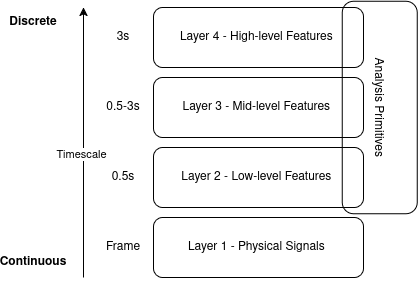

Conceptual framework#
The features are organised after the multi-layered computational framework of expressive movement qualities [1], which builds on the EyesWeb expressive gesture processing library [6, 7, 8]. The model, the idea of a timescale that runs through it, and the way each layer is realised in the package are presented below. They are the background to the choice of a feature: the user guide of each layer says which feature to use, and the family pages of the theory section define the quantities.
The model is the result of an open field of research. Some of its concepts are open to interpretation, its limits are still being worked out, and the layers describe how to think about movement, not a fixed processing chain. The features follow the model closely enough to be useful for movement analysis, without claiming that the model is complete.
The model#
The model describes how the signals recorded from a moving person can be turned, step by step, into descriptions of the qualities that an observer perceives in the movement. It has four layers and, alongside them, a set of analysis primitives.


The conceptual model after [1]. The vertical axis is the timescale of a layer, from continuous signals (frame by frame) to discrete units (3 s and longer). The analysis primitives apply across the layers.#
Layer 1, physical signals. The raw data that virtual sensors deliver: the output of motion capture, of an inertial unit, of a camera or of a physiological sensor, with the pre-processing that makes it usable (filtering, extraction of trajectories or silhouettes, simulation of a body). A physical signal is a time series, sampled at the rate of the sensor, and it is the foundation of all the layers above.
Layer 2, low-level features. Descriptors of one frame or of a short stretch of movement, computed from the physical signals: the velocity and acceleration of a joint, the kinetic energy of the body, its contraction, symmetry and balance, the smoothness of a speed profile. A low-level feature is again a time series, and a value of it says what the body is doing at this moment. Neither a movement unit nor an interpretation is needed to compute it.
Layer 3, mid-level features. Descriptors of a movement unit, or of a longer window: a gesture, a movement phase, a fragment of a choreography. Examples are the segmentation of a stream into gestures, the impulsivity and the suddenness of a movement, its fluidity, and the space it occupies over time [3, 9]. These features are called amodal because the same quality can be perceived and described in several modalities: a sudden movement can also be a sudden sound. Mid-level features summarise a stretch of low-level features, so they are usually discrete, one value for each unit.
Layer 4, high-level features. The qualities that an observer perceives and communicates: emotional expression, saliency, hesitation, predictability, and for groups the dominance, the leadership or the cohesion of the people involved (for example [4, 10]). These need memory and context, because what is perceived depends on what came before and on what is expected; in practice they are obtained by combining the lower layers, often with a learned mapping.
Analysis primitives. Measures that do not belong to one layer, because they take any signal as input and make no reference to a body: statistical moments, entropy, the detection of peaks, the measures of synchronization between signals. They are the building blocks from which features of the layers are made, and they apply at every layer, as the box that spans the layers in the figure says. Applied to a physical signal an entropy measure is a low-level quantity, applied to a series of gestures it is a mid-level one: the layer follows from the signal, not from the algorithm.
The idea of a timescale#
The key idea of the model is that every layer works at a timescale: the span of movement that one value of a feature describes. The timescale grows with the layer.
Layer |
Timescale |
A value describes |
|---|---|---|
1, physical signals |
frame |
one sample of a signal |
2, low-level features |
up to about 0.5 s |
a movement fragment |
3, mid-level features |
0.5 to 3 s |
a gesture, a movement unit |
4, high-level features |
3 s and above |
a phrase, a phase of an interaction |
analysis primitives |
any |
whatever signal is given |
The figure gives the same ordering on its vertical axis, from continuous at the bottom to discrete at the top. Near the bottom the data are continuous time series, one value for each sample. Towards the top the objects are discrete: a gesture has a start and an end, a phrase is a sequence of gestures, an interaction is a sequence of phrases. This is also why the model is not a strict pipeline: moving to the next layer is not only a computation but a change of the unit of analysis, from the sample to the segment, and a segment has to be found before it can be described.
Two consequences follow, and they are the reason for the idea.
First, the same quantity changes meaning with the timescale. The kinetic energy of one frame says how much the body is
moving now; the mean kinetic energy of a gesture says how energetic the gesture was; the same energy over a whole
performance says how the performer used energy over time. The three are computed with the same formula and answer three
different questions. The smoothness of a speed profile is the same: computed over half a second it describes a fragment of
a movement, computed over the length of a gesture it describes the gesture. The example below computes the spectral arc
length (SpectralArcLength, defined in Smoothness) of one speed profile of three
seconds, first in windows of 0.5 s and then in one window that holds the whole profile.
>>> from pyeyesweb.low_level import SpectralArcLength
>>> rate = 100.0
>>> time = np.arange(300) / rate
>>> bump = lambda centre, width, height: height * np.exp(-0.5 * ((time - centre) / width) ** 2)
>>> speed = bump(0.75, 0.20, 0.6) + bump(1.65, 0.07, 0.3) + bump(1.95, 0.07, 0.35) + bump(2.25, 0.07, 0.3) + bump(2.70, 0.05, 0.3)
>>> fragments = SpectralArcLength(window=50, sampling_rate=rate).run(speed) # 0.5 s windows
>>> values = fragments.spectral_arc_length[fragments.status == 0]
>>> len(values), round(float(values.min()), 2), round(float(values.max()), 2)
(251, -5.66, -1.4)
>>> gesture = SpectralArcLength(window=300, sampling_rate=rate).run(speed) # the whole gesture
>>> round(float(gesture.spectral_arc_length[-1]), 2)
-2.22
The fragments give 251 values between \(-5.66\) and \(-1.40\), each describing half a second; the gesture gives one value, \(-2.22\), that describes all of it. Neither is wrong, and neither replaces the other: the first shows where in the movement the corrections are, the second summarises how smooth the whole movement was.
Second, a timescale is a property of the question, not of the code. A window of a low-level feature can be made longer than half a second, and the library does not stop it. The quantity it then measures is still one of a movement fragment, only smoothed over a longer stretch, and it does not become a feature of a gesture: for that, the gesture has to be segmented first and the feature computed on the segment (see Gesture segmentation). The timescale that the library attaches to a feature is the one for which the quantity was designed.
How the library maps to the model#
Each layer of the model has one package, and there is one more for the analysis primitives; every feature belongs to exactly one of them. Layers and the catalog describes the packages and the catalog; the table gives the correspondence with the model, and the number of features in each group.
Layer of the model |
Package |
Timescale |
Features |
Content |
|---|---|---|---|---|
1, physical signals |
|
frame |
11 |
Virtual sensors and models: simulated bodies and their orientations, silhouettes and their parts, locating points in a grid. See Humanoid and mass-spring models and Imaging. |
2, low-level features |
|
up to about 0.5 s |
22 |
Kinematics and energy, smoothness, shape, symmetry and balance, contour measures. See Kinematics and energy, Smoothness and Shape, symmetry and balance. |
3, mid-level features |
|
0.5 to 3 s |
7 |
Gesture segmentation, impulsivity, suddenness, space occupied over time. See Gesture segmentation and Impulsivity and suddenness. |
4, high-level features |
|
3 s and above |
1 |
Qualities of a group, which need several people. See Dominance. |
analysis primitives |
|
any |
19 |
Entropy, rarity, periodicity, synchronization. See Entropy, rarity and periodicity and Synchronization. |
Each feature declares its layer and its timescale, and the catalog collects them. The number of features at each timescale is read from the catalog:
>>> from collections import Counter
>>> from pyeyesweb import catalog
>>> Counter((info.layer.name, info.timescale.value) for info in catalog())
Counter({('LOW_LEVEL', 'up to ~0.5 s'): 22, ('ANALYSIS_PRIMITIVE', 'any'): 19, ('PHYSICAL_SIGNALS', 'frame'): 11, ('MID_LEVEL', '0.5-3 s'): 7, ('HIGH_LEVEL', '3 s and above'): 1})
A few remarks on the placement make the mapping precise.
A feature goes to the layer of its input and output, not to the layer of the quantity it is about. A feature that takes the joints of a skeleton and gives a number for each frame is low-level, even if it is used for something that is perceived as a quality of the whole movement. The measures of synchronization between signals are analysis primitives although they are mostly applied to movement, because they know nothing of bodies.
Layer 1 is mostly about models and sensors. Features such as
HumanoidSimulatororSilhouetteCentroidsgive a signal again: a simulated pose, the centroids of a silhouette. The recording of the data itself is not the library’s job; Inputs describes what a feature expects.Layer 4 is deliberately small. A quality that is perceived needs several people, context and memory. The library provides the features that can be computed from the signals of a group (
EnsembleDominance) and leaves the mapping from features to labels, such as an emotion, to the user. The qualities communicated by one person are obtained by combining lower-layer features, typically with a learned model (see for example [11]).A mid-level feature needs a unit. Features such as
SuddennessImpulsivitywork on a window that holds one movement, andGestureSegmenterfinds the units in a stream. Together they make the step from the sample to the gesture that the model describes.A whole layer can be skipped. The entropy of a speed profile needs no segmentation, and the energy of a skeleton can be fed to a synchronization measure directly. The model gives the timescale of the result, not an obligation to visit every layer.
Moving between layers: an example#
A feature of one layer is built on the output of the layer below. The sketch follows one stream from layer 1 to layer 3. A
skeleton (layer 1, a physical signal) gives a frame of joint positions at every sample.
KineticEnergy (layer 2) turns each frame into one number, the energy of the body at this
moment. GestureSegmenter (layer 3) takes that number and finds where the gestures start
and end, and MotionDuration measures how long they last. Between the second and the third
step the unit of analysis changes from the frame to the gesture, and so does the timescale:
>>> from pyeyesweb.low_level import KineticEnergy
>>> from pyeyesweb.mid_level import GestureSegmenter, MotionDuration
>>> [(feature.__name__, feature.LAYER.name, feature.TIMESCALE.value) for feature in (KineticEnergy, GestureSegmenter, MotionDuration)]
[('KineticEnergy', 'LOW_LEVEL', 'up to ~0.5 s'), ('GestureSegmenter', 'MID_LEVEL', '0.5-3 s'), ('MotionDuration', 'MID_LEVEL', '0.5-3 s')]
The same example is run with data in Gesture segmentation. Such pipelines are written by the user, from the declared inputs and outputs of the features (Inputs, Results, statuses and recorders); the library does not impose one.
Limits of the model#
The model is a conceptual one, and three limits matter in practice.
The boundaries between layers are not sharp. A feature at 0.4 s and one at 0.6 s are not different in kind. The timescales are a guide to the question that a feature answers, and the layer of a feature in the library is a decision recorded in the catalog, not a measurement.
A perceived quality is not a number. The features of layers 2 and 3 are candidates for the correlates of what an observer perceives. Whether a given measure of smoothness predicts the fluidity that observers rate depends on the movement and on the observers, and has to be established for each use, as in the studies of fluidity [9, 12].
Groups are handled at the top. In the library, the measures that relate two or more signals (synchronization) are analysis primitives, and the features that need several people are high-level; their theory is in Synchronization and Dominance.
Further reading#
The model: [1]. The library and the platform that it comes from: [6], [8]. The library itself: [13]. The notation of the equations, the units, and the meaning of windows and hops are in Notation, units and conventions.